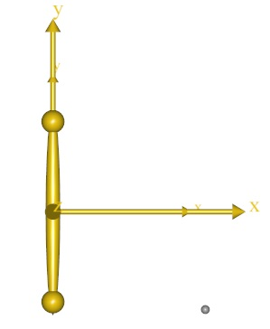
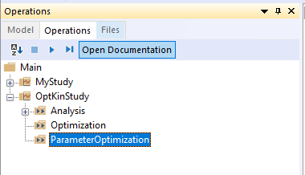
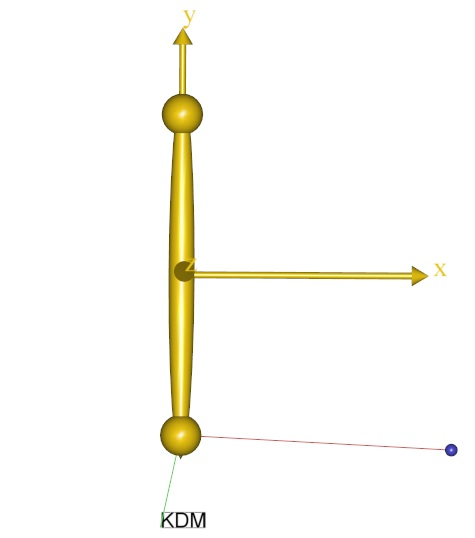
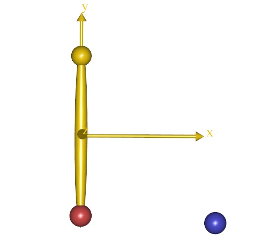

Lesson 2: Using motion capture data¶
In biomechanics, we often want to make our models move as we have measured in the laboratory and the measurement technique would often be tracking of optical markers in space by means of synchronized cameras.
There are many such systems available commercially, but a common feature of most of the systems is that they are capable of saving data on a standard format called a C3D file.
A C3D file contains data of the spatial trajectory of optical markers fixed to the object whose motion we want to record. The file can also contain analog data such as force platform measurements or EMG.
AnyBody can read the data from a C3D file directly. Please download and save the
file pendulum.c3d in the directory where
you saved the Pendulum.any file.
Next, place the cursor in the editor window just before the AnyKinMotion
object, click the Classes tab (on the right side of the screen), unfold the class list, and locate the
AnyInputC3D class. Right-click the class and choose “Insert Class
Template”.
AnyInputC3D <ObjectName> =
{
FileName = "";
//ReadAllDataOnOff = On;
//TruncateExtraCharsInNamesOnOff = On;
//MakeNameUniqueStr = "_";
//PointsScaleFactor = 1.0;
//ConstructModelOnOff = On;
//ConstructChartOnOff = On;
//ConstructWeightFunUsingResidualOnOff = Off;
//GapFillUsingResidualsOnOff = Off;
//MarkerUseAllPointsOnOff = Off;
//MarkerUseCamMaskOnOff = On;
//MarkerIndices = ;
//MarkerLabels = ;
//MarkerFilterIndex = 0;
//ProcessedDataFilterIndex = 0;
//AnalogFilterIndex = -1;
/*Filter =
{
z0 = ;
AutomaticInitialConditionOnOff = On;
FilterForwardBackwardOnOff = On;
N = 2;
W = ;
Fs = 0.0;
Fc = {10.0};
Type = LowPass;
};*/
//WeightThreshold = 0.0;
//WeightOutput = {{0.0, 1.0}, {0.0, 1.0}, {0.0, 1.0}};
//WeightTransitionTime = 0.1;
//SearchAndReplace = ;
//WriteMarkerDataToFilesOnOff = Off;
//MarkerScaleXYZ = {0.025, 0.025, 0.025};
//MarkerRGB = {0.65, 0.65, 0.65};
//MarkerDrawOnOff = On;
//MarkerInterPolType = Bspline;
//MarkerBsplineOrder = 4;
};
As you can see, the class has a lot of settings, but for now we shall only use two of them, namely FileName and ConstructChartOnOff. We also give a name to the object:
AnyInputC3D C3D = {
FileName = "pendulum.c3d";
//TruncateExtraCharsInNamesOnOff = On;
//MakeNameUniqueStr = "_";
//PointsScaleFactor = 1;
//ConstructModelOnOff = On;
ConstructChartOnOff = Off;
ConstructChartOnOff instructs the C3D object to not draw 3D
trajectories.
Now, try loading the model again. You may get the following error message:
Time, 't', has an invalid value for this interpolation
C3D files contain marker trajectories covering a certain time span and what goes on outside that interval is undefined. Furthermore, the very beginning and very end of that time span may not be useful for the motion interpolation due to initial transients.
If you have a C3D file of unknown duration, then you somehow have to figure out
its start and end times to enable AnyBody to analyze it. A simple way to do this
is to allow AnyBody to load the file by temporarily disabling the study section
of your model. This will eliminate the study’s conflicting start and end times.
Just block-select the study section and click the “Comment out” tool button over
the editor window (or press Ctrl+Shift+k):
// The study: Operations to be performed on the model
// AnyBodyStudy MyStudy = {
// AnyFolder &Model = .MyModel;
// Gravity = {0.0, -9.81, 0.0};
// };
Now the model should load with no problems, and you can go to the tree view in the left hand side of the screen, click the Model tab and unfold the MyModel tree down to the C3D object as shown below.

A bit down in this object you find the Header section. When you unfold it you get access to a number of basic properties of the C3D file. Each time you double-click a property, a window will pop up and give you its value. The important properties in question are these:
FirstFrameNo = 1
LastFrameNo = 1000
VideoFrameRate = 100
This shows that the file has a total of 1000 frames at 100 frames/sec, i.e. the simulation time spans ten seconds. We can now go to the editor window and remove the temporary double slashes in front of each line in the study section.
// The study: Operations to be performed on the model
AnyBodyStudy MyStudy = {
AnyFolder &Model = .MyModel;
Gravity = {0.0, -9.81, 0.0};
};
…and insert specifications of simulation time:
AnyBodyStudy MyStudy = {
AnyFolder &Model = .MyModel;
Gravity = {0.0, -9.81, 0.0};
tStart = 0.05;
tEnd = 9.95;
};
There is also an automated way to handle the problem. The frame rate variables we have just processed manually can also be referred to directly in the study section, such that the tStart and tEnd parameters automatically adapt to the C3D file. Try this instead:
AnyBodyStudy MyStudy = {
AnyFolder &Model = .MyModel;
Gravity = {0.0, -9.81, 0.0};
AnyIntVar FirstFrame = Main.MyModel.C3D.Header.FirstFrameNo;
AnyIntVar LastFrame = Main.MyModel.C3D.Header.LastFrameNo;
tStart = FirstFrame/Main.MyModel.C3D.Header.VideoFrameRate+2*Kinematics.ApproxVelAccPerturb;
tEnd = LastFrame/Main.MyModel.C3D.Header.VideoFrameRate-2*Kinematics.ApproxVelAccPerturb;
};
Notice that we start the simulation 2*Kinematics.ApproxVelAccPerturb
after the beginning of the recorded motion and we end it similarly
before the end of the recording. The variable
Kinematics.ApproxVelAccPerturb contains information about the
algorithm’s necessary elbow room on each side of the analyzed interval.
This eliminates possible numerical trouble with end points.
Now the model should load and the Model View window will display a small, grey dot to the right of the pendulum end.

The small dot is in fact the single marker contained in Pendulum.c3d. A
typical file from a real motion capture experiment can contain dozens of
markers, but in the interest of simplicity we have just included a single one
here. The AnyInputC3D object automatically creates the small dots and the
drivers necessary to move them around as they were recorded. If you run the
Kinematics operation, you will see the pendulum move as before, while the marker
performs an oscillating motion back and forth
So how do we get the marker to drive the pendulum? This can be done quite easily with the AnyKinDriverMarker object. The steps are:
Remove the existing driver that makes the pendulum rotate.
Drive the marker point,
P1, on the pendulum to follow the data recorded in the C3D file.
Start by selecting the existing AnyKinMotion driver and comment it out
of the model. That takes care of step 1.
Then click the Classes tab on the right side of the screen,
insert a new AnyKinDriverMarker template, and give it a name:
AnyKinDriverMarker <ObjectName> =
{
//RefFrames = ;
//Surfaces = ;
//KinMeasureArr = ;
//KinMeasureIndexArr = ;
//MeasureOrganizer = ;
//CType = ;
//WeightFun = ;
//DriverPos0 = ;
//DriverVel0 = ;
//DriverAcc0 = ;
AnyRefFrame &<Insert name0> = <Insert object reference (or full object definition)>;
//AnyRefFrame &<Insert name1> = <Insert object reference (or full object definition)>;
//AnyParamFun &<Insert name0> = <Insert object reference (or full object definition)>;
};
Just as before, the AnyKinDriverMarker object needs to know what to
drive and what to drive it with. The “what to drive” part is the
position of P1 on the pendulum. This is specified with the first
reference frame in the object:
AnyKinDriverMarker C3DMotion =
{
//RefFrames = ;
//Surfaces = ;
//KinMeasureArr = ;
//KinMeasureIndexArr = ;
//MeasureOrganizer = ;
//CType = ;
//WeightFun = ;
//DriverPos0 = ;
//DriverVel0 = ;
//DriverAcc0 = ;
AnyRefFrame &Marker = .Pendulum.P1;
//AnyRefFrame &<Insert name1> = <Insert object reference (or full object definition)>;
//AnyParamFun &<Insert name0> = <Insert object reference (or full object definition)>;
};
The marker coordinates in the C3D file are recorded in the laboratory
coordinate system, which we shall assume is our global reference frame.
Driving from GlobalRef is default in linear measures, so we need not
mention GlobalRef explicitly in the AnyKinDriverMarker object.
We are going to drive the point directly by means of the interpolation
function specifying the marker trajectory in the C3D object. First, give
a reasonable name to the AnyParamFun and remove the stuff after the
equality sign:
AnyKinDriverMarker C3DMotion =
{
//RefFrames = ;
//Surfaces = ;
//KinMeasureArr = ;
//KinMeasureIndexArr = ;
//MeasureOrganizer = ;
//CType = ;
//WeightFun = ;
//DriverPos0 = ;
//DriverVel0 = ;
//DriverAcc0 = ;
AnyRefFrame &Marker = .Pendulum.P1;
//AnyRefFrame &<Insert name1> = <Insert object reference (or full object definition)>;
AnyParamFun &Trajectory = ;
};
Then click the Model tab in the tree view on the left hand side of the editor
window, unfold the MyModel branch and subsequently the C3D object ->
Points -> Markers -> L000 and arrive at PosInterpol as shown
below.

This is the actual interpolation function of the marker in question.
Place the cursor after the equality sign of the AnyParamFun line,
right-click the PosInterpol object, and choose “Insert object name”. You
should get this:
AnyKinDriverMarker C3DMotion =
{
//RefFrames = ;
//Surfaces = ;
//KinMeasureArr = ;
//KinMeasureIndexArr = ;
//MeasureOrganizer = ;
//CType = ;
//WeightFun = ;
//DriverPos0 = ;
//DriverVel0 = ;
//DriverAcc0 = ;
AnyRefFrame &Marker = .Pendulum.P1;
//AnyRefFrame &<Insert name1> = <Insert object reference (or full object definition)>;
AnyParamFun &Trajectory = Main.MyModel.C3D.Points.Markers.L000.PosInterpol;
};
Now load the model and run the kinematic analysis. You will get the following error message:
ERROR(OBJ.MCH.KIN3) : ... Kinematic analysis failed in time step 0 : System is kinematically over-constrained
It is time to think back to the concept of degrees-of-freedom, DoF. In the
beginning of the tutorial, we established that the free pendulum has one DoF.
But the marker trajectory has three coordinates and therefore wants to drive
P1 of the pendulum in \(x\), \(y\) and \(z\), i.e. two DoFs more
than we have available.
There are two possible solutions to this problem. Either we pick only one of the directions given by the marker and let the revolute joint decide the rest, or we have to accept that the pendulum cannot follow the marker completely in all three DoFs, i.e. something has to give.
Driving just one direction would be fairly simple in this case, but in a more complicated model with many markers, the selection of a subset of directions to drive can be a very tedious process.
Another aspect to consider is that marker data are measured and therefore always infested with various types of errors and noise. One of the serious errors in motion capture technology is the so-called soft tissue artifact or skin artifact. It comes from the fact that markers are placed on the skin at some distance from the bone whose motion they are supposed to record. Between the marker and the bone are layers of skin, fat and muscle, so the marker never moves exactly with the bone. It is therefore natural in the model to presume that the connection between the marker and the bone is not a rigid one, and when that is the case, AnyBody will accept drivers on more DoFs than the model actually has.
Resolving the kinematics in the presence of moving markers is somewhat more complicated numerically, so we have to ask for a specific kinematics solver that can handle it. This is done in the study section:
AnyBodyStudy MyStudy = {
AnyFolder &Model = .MyModel;
Gravity = {0.0, -9.81, 0.0};
AnyIntVar FirstFrame = Main.MyModel.C3D.Header.FirstFrameNo;
AnyIntVar LastFrame = Main.MyModel.C3D.Header.LastFrameNo;
tStart =FirstFrame/Main.MyModel.C3D.Header.VideoFrameRate+2*Kinematics.ApproxVelAccPerturb;
tEnd = LastFrame/Main.MyModel.C3D.Header.VideoFrameRate-2*Kinematics.ApproxVelAccPerturb;
InitialConditions.SolverType = KinSolOverDeterminate;
Kinematics.SolverType = KinSolOverDeterminate;
};
The two additional lines select a kinematic solver for the InitialConditions and Kinematics operations that will accept more kinematic constraints than the system has DoFs.
Note
See Andersen MS, Damsgaard M, and Rasmussen J. 2007 for detailed information about the algorithm behind the overdeterminate kinematic analysis.
Now you can reload and run the kinematic analysis and you should see the pendulum following the marker movement. You cannot see the marker during the movement because it is hidden inside the pendulum. In fact, the marker is not strictly necessary for the analysis and we can get rid of it altogether by an additional specification in the C3D object:
AnyInputC3D C3D =
{
FileName = "pendulum.c3d";
//ReadAllDataOnOff = On;
//TruncateExtraCharsInNamesOnOff = On;
//MakeNameUniqueStr = "_";
//PointsScaleFactor = 1.0;
ConstructModelOnOff = Off;
ConstructChartOnOff = Off;
//ConstructWeightFunUsingResidualOnOff = Off;
//GapFillUsingResidualsOnOff = Off;
//MarkerUseAllPointsOnOff = Off;
//MarkerUseCamMaskOnOff = On;
...
With the unnecessary marker gone from the model, the kinematic analysis runs much faster than before. Each marker adds DoFs and constraints to the model, and they require solution time. It is therefore more efficient to leave the markers out unless you really need them.
Now that there is driver between pendulum and the marker, it is possible to simultaneously draw both the point on the pendulum and the marker from the C3D file. To do this, start by placing the cursor inside the AnyKinDriverMarker object.
Then click the Classes tab on the right side of screen, insert a new
AnyDrawKinMeasure template, remove the properties we will not need and give
it a name:
AnyKinDriverMarker C3Dmotion =
{
//MeasureOrganizer = {};
//CType = ;
//WeightFun = {};
//DriverPos0 = {};
//DriverVel0 = {};
//DriverAcc0 = {};
AnyRefFrame &Marker = .Pendulum.P1;
//AnyRefFrame &<Insert name1> = <Insert object reference (or full object definition)>;
AnyParamFun &Trajectory =
Main.MyModel.C3D.Points.Markers.L000.PosInterpol;
AnyDrawKinMeasure drw =
{
//Label = On;
//Size = 0.02;
//Line = On;
};
};
If you reload the model, you should see something like this:

The blue dot illustrates the marker from the c3d file and the red line
is drawn to illustrate the difference between the point on the segment
and the measured point. Please notice that there is a small ball hidden
inside yellow sphere from the drawing of the segment. The plot also
shows a label “KDM”, which indicates that it is an AnyKinDriverMarker
that is drawn.
The line between the two points and the label can be removed by changing
the Label and Line settings to Off. Let us also change the size of the
dots such that we can see both the point on the segment as well as the
measured point.
AnyDrawKinMeasure drw =
{
Label = Off;
Size = 0.07;
Line = Off;
};
Reloading the model should show you something like this:

Let us briefly investigate the kinematic constraints of our model. Click
the Model tab in the tree view on the left hand side of the screen and
unfold the Joint branch. Inside you find Constraints, and after
unfolding that branch you find the property CType. If you double-click
it, the popup window shows the following:
CType = {Hard, Hard, Hard, Hard, Hard}
CType appears to be a vector with five components, owing to the fact
that a revolute joint has five constraints, and CType specifies that all
of these are Hard. This means that the kinematic solver is not allowed
to violate any of them.
If you similarly locate and unfold the C3DMotion object you again find a
CType, and double-clicking it reveals
CType = {Soft, Soft, Soft}
We have implicitly specified that the joint is a hard constraint while
the marker is a soft constraint. Joints automatically have their
constraint types set to Hard and AnyKinDriverMarker objects
automatically have soft constraints, but these rules can be overridden
by the user by explicit specification of CType in the respective
objects.
In Lesson 3 we investigate how to filter noise out of the measured data.
See also
Next lesson: Lesson3: Noise and filters.
 Fix it your self
Fix it your self